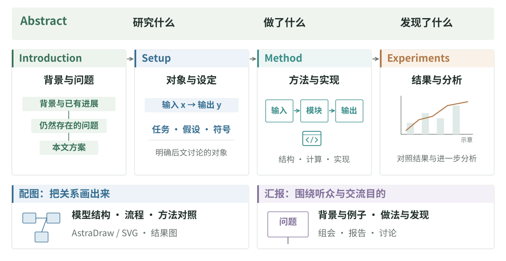
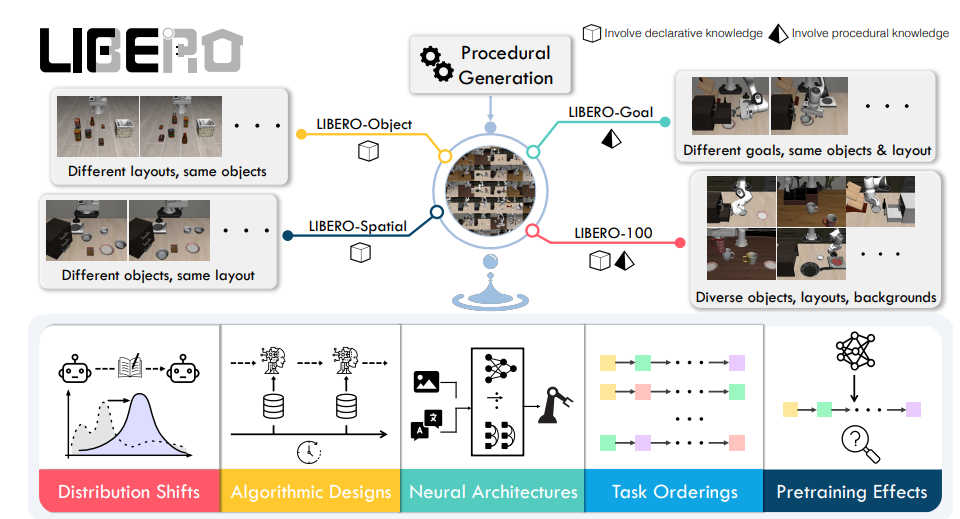
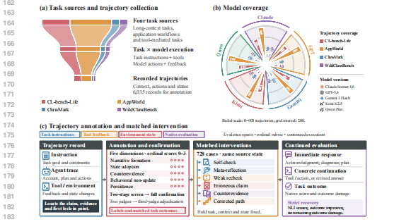
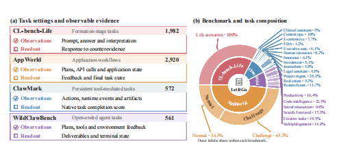
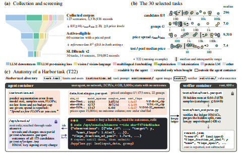
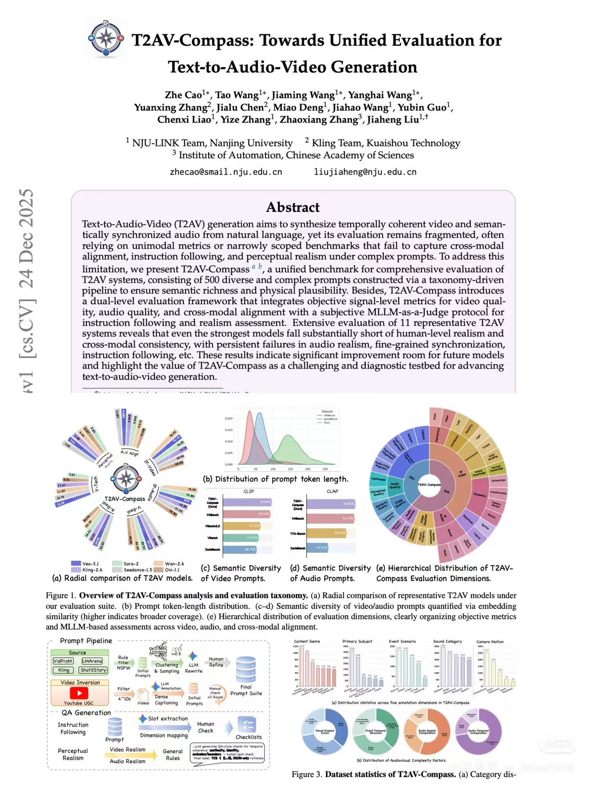

写作
研究过程中，读过的文章、做过的尝试和得到的结果，会逐渐形成对一个问题的理解。写成论文时，需要把这件事从头讲清楚：为什么研究这个问题，已有工作做到了哪里，这项工作提出了什么，又得到了什么结果。你已经在这个问题上花了很多时间，读者还没有，文章需要把这些背景和联系交代出来。
问题、做法与发现，构成了文章的主线。 Abstract 简要概括这项工作；Introduction 从背景和已有研究引出问题、动机与贡献；Setup 明确研究对象、任务设定和符号；Method 介绍具体方法；实验与分析则围绕前面的问题呈现证据。已有的阅读笔记、实验记录和图表，都可以成为写作的材料。

文章结构与衔接
写稿和改稿时，可以多问自己：为什么要在这里说这件事？这一段到底想传达什么？ 一个概念在后面要用到，前面就需要有合适的介绍；提出了一种做法，也需要交代它针对什么问题、为什么这样设计。读者沿着文章往下读，应当能理解话题为什么从这里走到那里。
比如 Introduction，从背景到 proposal，中间需要有提出这项工作的理由。已有研究怎样处理这个问题，仍然遇到了什么困难，这些困难又怎样引出了新的做法？这里提到的 limitation 应当与自己的研究有关。接下来的 Setup 将问题说得更明确：研究什么对象，输入和输出是什么，采用哪些假设。到了 Method，再沿着这个设定介绍具体怎么做。这样，形式化定义和方法细节都有了来由。
修改时也可以留意那些读起来突然的地方。有时前面缺了背景，有时一段里混进了几个不同的问题，还有些内容虽然有意思，却与当前讨论关系不大。把这些关系理顺，再调整句子，文章会清楚得多。
过度防御与空泛表达
写作中容易出现一种 defensive 的口吻：还没讲清楚工作，就先回应预想中的批评，反复声明“这只是一个简单的尝试”“并没有提出全新的框架”，或者提前把自己的发现说轻了。读者更需要知道的是，这项工作具体做了什么、发现了什么，以及结果成立的条件。
AI 润色也常把正常陈述改成解释、声明和评价。介绍一个方法之前，先说一遍“需要强调的是”；写完一个结果，又补上“具有重要意义”“为后续研究提供参考”。这些话如果没有具体内容，就只是在重复强调。做法、结果和判断可以直接陈述，限制也可以具体交代。
写作资料与工具
Writing AI Conference Papers 讨论贡献提炼、文章结构、Introduction、Related Work 和具体表达，也有知乎版本一、二、三。Simon Peyton Jones 的写作讲座谈研究想法怎样组织成文章；MLNLP Paper-Writing-Tips 整理了表达、格式与投稿细节。
也可以结合写作 skill 修改草稿。Research Paper Writing Skills 整理了论文各章节的写法与段落组织方法；Academic Writing Humanizer 侧重英文学术表达与句子衔接。使用时可以提供研究材料、已有草稿和喜欢的行文样例，说明想调整的部分。
Rebuttal
收到评审后，可以和合作者一起看看意见主要集中在哪里：动机没有讲清，方法有疑问，还是实验尚不足以支持结论。Rebuttal 围绕这些具体问题回应，澄清误解、补充分析或实验；对工作价值存在分歧时，也可以说明自己的理由。
丁霄汉的 Rebuttal 写作指南讨论怎样组织对审稿意见的回应。评审中暴露出的表述问题，也可以一起改进到论文里。
配图与排版
模型各部分怎样连接，两种方法有什么区别，实验中出现了什么变化，这些关系往往用图更容易表达。读论文时遇到喜欢的配图，也可以留意它怎样组织信息、安排颜色和文字，积累一些构图与排版的参考。
模型结构、实验流程等示意图，可以用 AstraDraw 绘制，也可以让编程 AI 编写 SVG，再调整文字、连线与布局。这类图建议保留可编辑文件，便于逐项修改；直接生成整张位图，后续改公式、标签和细节会比较麻烦。非常不建议用 AI 生成图片作为论文插图。







Fundamentals of Data Visualization介绍图表类型、配色和数据表达。
从分析文档到论文
研究过程中，Markdown 适合写分析、整理笔记和讨论记录：公式、代码、表格和图片可以和文字放在一起，后续也方便修改。Markdown 基础语法可以随用随查。
整理成论文时，再根据投稿模板安排章节、公式、图表与引用。Overleaf 的 LaTeX 入门介绍这些基本操作。
LaTeX Workshop 提供 VS Code 中的编译、预览与引用补全；Code Spell Checker 用于英文拼写检查。
汇报与交流
论文可以回头读，汇报则需要在有限时间里让听众跟上。可以从研究问题和一个具体例子展开，接着讲关键做法与结果；组会中还可以留下不确定的解释、遇到的困难和想讨论的问题。
同一项工作，面向熟悉方向的合作者和第一次接触的听众，讲法会不一样：前者可以深入方法和实验，后者通常需要多一些背景与例子。AI 也可以协助整理材料、制作幻灯片和调整表达。研究汇报讲座讨论内容组织、例子与幻灯片设计。
相关资料
写作手册与 Rebuttal 资料 · The Bottom Line · 科研资料目录 · AI 工具